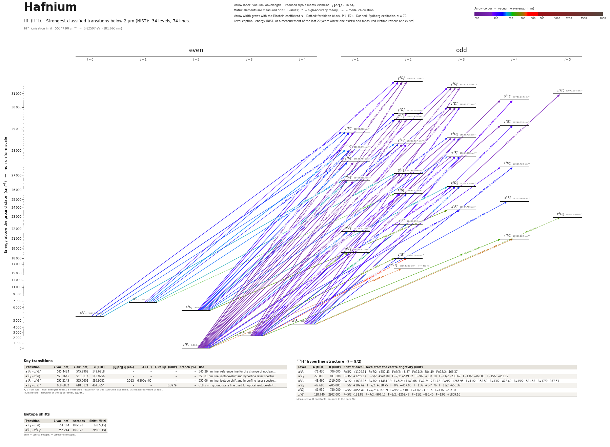

Hafnium energy level diagram
Energy levels and transitions of neutral hafnium (Hf I): the 74 strongest classified lines below 2 µm from the NIST Atomic Spectra Database and the 34 levels they connect, each line with its vacuum wavelength, frequency and, for 70 of them, the reduced dipole matrix element derived from the NIST transition rate. Measured lifetimes, transition rates, hyperfine constants and isotope shifts from the literature are included, each with its citation.
Hover a line or a level to isolate it, click to keep it selected. Scroll to zoom, drag to move.

Download: diagram (PDF) diagram (SVG) transitions (CSV) levels (CSV) source code

Key transitions of hafnium
| Transition | λ vac (nm) | λ air (nm) | ν (THz) | |⟨J‖er‖J′⟩| (ea₀) | A (s⁻¹) | Γ/2π up. (MHz) | branch (%) | Use |
|---|---|---|---|---|---|---|---|---|
| a 3F4 – z 5G°5 | 545.4424 | 545.2908 | 549.6318 | – | – | – | – | 545.29 nm line: reference line for the change of nuclear… |
| a 3F2 – z 3P°1 | 551.1645 | 551.0114 | 543.9256 | – | – | – | – | 551.01 nm line: isotope-shift and hyperfine laser spectro… |
| a 3F2 – z 5G°2 | 555.2143 | 555.0601 | 539.9581 | 0.512 | 6.200e+05 | – | – | 555.06 nm line: isotope-shift and hyperfine laser spectro… |
| a 3F2 – z 3D°2 | 618.6832 | 618.5121 | 484.5654 | – | – | 0.3979 | – | 618.5 nm ground-state line used for optical isotope-shift… |
λ, ν from NIST level energies unless a measured frequency for this isotope is available. A: measured value or NIST. Γ/2π: natural linewidth of the upper level, 1/(2πτ).
179Hf hyperfine structure (I = 9/2)
| Level | A (MHz) | B (MHz) | Shift of each F level from the centre of gravity (MHz) |
|---|---|---|---|
| a 3F2 | -71.430 | 706.000 | F=5/2: +1109.31 F=7/2: +550.43 F=9/2: +8.37 F=11/2: -384.49 F=13/2: -466.37 |
| a 3F3 | -50.810 | 931.000 | F=3/2: +1265.07 F=5/2: +944.09 F=7/2: +549.02 F=9/2: +134.18 F=11/2: -230.62 F=13/2: -460.03 F=15/2: -453.19 |
| a 3F4 | -43.460 | 1619.000 | F=1/2: +1698.16 F=3/2: +1481.19 F=5/2: +1143.66 F=7/2: +721.72 F=9/2: +265.95 F=11/2: -158.59 F=13/2: -472.40 F=15/2: -581.52 F=17/2: -377.53 |
| a 1D2 | -47.680 | -905.000 | F=5/2: +109.69 F=7/2: +338.75 F=9/2: +407.00 F=11/2: +144.76 F=13/2: -655.37 |
| z 3D°2 | -46.930 | 740.000 | F=5/2: +855.40 F=7/2: +367.39 F=9/2: -75.04 F=11/2: -333.16 F=13/2: -237.37 |
| z 5G°2 | 128.740 | 2802.000 | F=5/2: -131.89 F=7/2: -907.17 F=9/2: -1203.47 F=11/2: -495.40 F=13/2: +1859.16 |
Measured A, B constants; sources in the data file.
Isotope shifts
| Transition | λ vac (nm) | Isotopes | Shift (MHz) |
|---|---|---|---|
| a 3F2 – z 3P°1 | 551.164 | 180-178 | 378.5(15) |
| a 3F2 – z 5G°2 | 555.214 | 180-178 | -960.1(15) |
Shift = ν(first isotope) − ν(second isotope).
Listed Hf transitions below 2 µm
| Lower level | Upper level | λ vacuum (nm) | λ air (nm) | ν (THz) | Type | |⟨J‖er‖J′⟩| (ea₀) | A (s⁻¹) | Branching (%) | Source of matrix element / A |
|---|---|---|---|---|---|---|---|---|---|
| a 3F2 | y 1D°2 | 316.3474 | 316.2558 | 947.6686 | E1 (intercombination) | 1.262 NIST | 2.040e+07 NIST | – | NIST ASD (accuracy B+) |
| a 3F2 | y 5D°3 | 319.0553 | 318.9631 | 939.6253 | E1 (intercombination) | 0.520 NIST | 2.410e+06 NIST | – | NIST ASD (accuracy B) |
| a 3F2 | y 3D°3 | 333.3683 | 333.2725 | 899.2830 | E1 | 1.530 NIST | 1.830e+07 NIST | – | NIST ASD (accuracy B+) |
| a 3F2 | y 5D°2 | 336.1018 | 336.0053 | 891.9691 | E1 (intercombination) | 0.518 NIST | 2.860e+06 NIST | – | NIST ASD (accuracy B+) |
| a 3F2 | y 3P°2 | 340.1190 | 340.0214 | 881.4342 | E1 | 0.591 NIST | 3.600e+06 NIST | – | NIST ASD (accuracy C+) |
| a 3F3 | y 1D°2 | 341.8319 | 341.7339 | 877.0172 | E1 (intercombination) | 0.831 NIST | 7.000e+06 NIST | – | NIST ASD (accuracy B+) |
| a 3F3 | y 5D°3 | 344.9959 | 344.8971 | 868.9740 | E1 (intercombination) | 0.216 NIST | 3.290e+05 NIST | – | NIST ASD (accuracy B) |
| a 3F2 | y 3D°1 | 347.3395 | 347.2401 | 863.1106 | E1 | 1.277 NIST | 2.630e+07 NIST | – | NIST ASD (accuracy B+) |
| a 3F2 | z 3G°3 | 349.8494 | 349.7494 | 856.9185 | E1 | 1.627 NIST | 1.790e+07 NIST | – | NIST ASD (accuracy B+) |
| a 3F3 | y 3F°4 | 352.4031 | 352.3023 | 850.7090 | E1 | 1.685 NIST | 1.460e+07 NIST | – | NIST ASD (accuracy B+) |
| a 3F2 | y 3D°2 | 353.7639 | 353.6629 | 847.4364 | E1 | 1.024 NIST | 9.600e+06 NIST | – | NIST ASD (accuracy B+) |
| a 3F2 | z 3S°1 | 356.5324 | 356.4306 | 840.8561 | E1 | 0.471 NIST | 3.300e+06 NIST | – | NIST ASD (accuracy B+) |
| a 3F2 | y 3F°3 | 361.6067 | 361.5036 | 829.0568 | E1 | 0.395 NIST | 9.570e+05 NIST | – | NIST ASD (accuracy B) |
| a 3F3 | y 3D°3 | 361.7922 | 361.6891 | 828.6316 | E1 | 1.366 NIST | 1.140e+07 NIST | – | NIST ASD (accuracy B+) |
| a 3F2 | y 5D°1 | 363.1901 | 363.0866 | 825.4422 | E1 (intercombination) | 0.636 NIST | 5.700e+06 NIST | – | NIST ASD (accuracy B) |
| a 3F3 | y 5D°2 | 365.0140 | 364.9100 | 821.3178 | E1 (intercombination) | 0.849 NIST | 6.000e+06 NIST | – | NIST ASD (accuracy B+) |
| a 3F2 | y 3F°2 | 368.3287 | 368.2238 | 813.9265 | E1 | 1.777 NIST | 2.560e+07 NIST | – | NIST ASD (accuracy B+) |
| a 3F3 | y 3P°2 | 369.7568 | 369.6516 | 810.7828 | E1 | 0.622 NIST | 3.100e+06 NIST | – | NIST ASD (accuracy C+) |
| a 3F3 | z 3G°4 | 371.8855 | 371.7797 | 806.1419 | E1 | 1.434 NIST | 9.000e+06 NIST | – | NIST ASD (accuracy B+) |
| a 3F4 | y 5D°3 | 373.4843 | 373.3781 | 802.6909 | E1 (intercombination) | 1.283 NIST | 9.140e+06 NIST | – | NIST ASD (accuracy B+) |
| a 3F2 | z 1P°1 | 377.8723 | 377.7650 | 793.3697 | E1 (intercombination) | 1.264 NIST | 2.000e+07 NIST | – | NIST ASD (accuracy B+) |
| a 3F4 | z 3G°5 | 378.6532 | 378.5456 | 791.7337 | E1 | 1.912 NIST | 1.240e+07 NIST | – | NIST ASD (accuracy B+) |
| a 3F2 | z 5D°3 | 380.1442 | 380.0363 | 788.6283 | E1 (intercombination) | 0.737 NIST | 2.860e+06 NIST | – | NIST ASD (accuracy B) |
| a 3F3 | z 3G°3 | 381.2857 | 381.1775 | 786.2672 | E1 | 0.794 NIST | 3.290e+06 NIST | – | NIST ASD (accuracy B+) |
| a 3F4 | y 3F°4 | 382.1807 | 382.0723 | 784.4259 | E1 | 2.059 NIST | 1.710e+07 NIST | – | NIST ASD (accuracy B+) |
| a 1D2 | y 1D°2 | 385.0270 | 384.9178 | 778.6272 | E1 | 1.776 NIST | 2.240e+07 NIST | – | NIST ASD (accuracy B+) |
| a 3F3 | y 3D°2 | 385.9400 | 385.8306 | 776.7851 | E1 | 1.065 NIST | 8.000e+06 NIST | – | NIST ASD (accuracy B+) |
| a 1D2 | y 5D°3 | 389.0458 | 388.9356 | 770.5839 | E1 (intercombination) | 0.697 NIST | 2.390e+06 NIST | – | NIST ASD (accuracy B+) |
| a 3F2 | z 5D°2 | 390.1035 | 389.9930 | 768.4947 | E1 (intercombination) | 0.784 NIST | 4.200e+06 NIST | – | NIST ASD (accuracy B+) |
| a 3F4 | y 3D°3 | 393.2486 | 393.1372 | 762.3485 | E1 | 0.980 NIST | 4.570e+06 NIST | – | NIST ASD (accuracy B+) |
| a 3F3 | y 3F°3 | 395.2931 | 395.1813 | 758.4054 | E1 | 0.924 NIST | 4.000e+06 NIST | – | NIST ASD (accuracy B) |
| a 3F3 | z 5D°4 | 397.4603 | 397.3479 | 754.2702 | E1 (intercombination) | 0.504 NIST | 9.100e+05 NIST | – | NIST ASD (accuracy C+) |
| a 3P1 | y 1D°2 | 399.3886 | 399.2757 | 750.6285 | E1 (intercombination) | 0.244 NIST | 3.800e+05 NIST | – | NIST ASD (accuracy C+) |
| a 3F3 | y 3F°2 | 403.3398 | 403.2259 | 743.2751 | E1 | 0.540 NIST | 1.800e+06 NIST | – | NIST ASD (accuracy B+) |
| a 3F4 | z 3G°4 | 405.2022 | 405.0878 | 739.8588 | E1 | 0.344 NIST | 4.000e+05 NIST | – | NIST ASD (accuracy E) |
| a 1D2 | y 3D°3 | 410.5388 | 410.4229 | 730.2415 | E1 (intercombination) | 0.429 NIST | 7.710e+05 NIST | – | NIST ASD (accuracy B) |
| a 1D2 | y 5D°2 | 414.6922 | 414.5753 | 722.9277 | E1 (intercombination) | 0.489 NIST | 1.360e+06 NIST | – | NIST ASD (accuracy B) |
| a 3F4 | z 3G°3 | 416.3876 | 416.2703 | 719.9841 | E1 | 0.462 NIST | 8.570e+05 NIST | – | NIST ASD (accuracy B) |
| a 3F3 | z 5D°3 | 417.5517 | 417.4340 | 717.9769 | E1 (intercombination) | 1.072 NIST | 4.570e+06 NIST | – | NIST ASD (accuracy B) |
| a 3F2 | z 1F°3 | 422.9268 | 422.8077 | 708.8520 | E1 (intercombination) | 0.347 NIST | 4.600e+05 NIST | – | NIST ASD (accuracy C+) |
| a 3F3 | z 5D°2 | 429.5985 | 429.4777 | 697.8433 | E1 (intercombination) | 0.688 NIST | 2.420e+06 NIST | – | NIST ASD (accuracy B+) |
| a 3P0 | y 3D°1 | 429.7657 | 429.6448 | 697.5719 | E1 | 0.355 NIST | 1.070e+06 NIST | – | NIST ASD (accuracy B) |
| a 1D2 | y 3D°1 | 431.9345 | 431.8131 | 694.0692 | E1 (intercombination) | 0.516 NIST | 2.230e+06 NIST | – | NIST ASD (accuracy B) |
| a 3F4 | y 3F°3 | 433.1495 | 433.0277 | 692.1223 | E1 | 0.518 NIST | 9.570e+05 NIST | – | NIST ASD (accuracy B) |
| a 3F4 | z 5D°4 | 435.7530 | 435.6306 | 687.9871 | E1 (intercombination) | 0.878 NIST | 2.100e+06 NIST | – | NIST ASD (accuracy C+) |
| a 1D2 | z 3G°3 | 435.8227 | 435.7002 | 687.8771 | E1 (intercombination) | 0.267 NIST | 2.500e+05 NIST | – | NIST ASD (accuracy C+) |
| a 3P1 | y 3P°2 | 438.0407 | 437.9177 | 684.3941 | E1 | 0.199 NIST | 1.900e+05 NIST | – | NIST ASD (accuracy C+) |
| a 1D2 | y 3D°2 | 441.9143 | 441.7902 | 678.3950 | E1 (intercombination) | 0.669 NIST | 2.100e+06 NIST | – | NIST ASD (accuracy B+) |
| a 3P0 | z 3S°1 | 443.9282 | 443.8036 | 675.3174 | E1 | 0.757 NIST | 4.430e+06 NIST | – | NIST ASD (accuracy B+) |
| a 3F2 | z 5F°2 | 445.4233 | 445.2983 | 673.0506 | E1 (intercombination) | 0.168 NIST | 1.300e+05 NIST | – | NIST ASD (accuracy D+) |
| a 3F3 | z 5F°4 | 445.8595 | 445.7344 | 672.3922 | E1 (intercombination) | 0.482 NIST | 5.900e+05 NIST | – | NIST ASD (accuracy D+) |
| a 1D2 | z 3S°1 | 446.2428 | 446.1176 | 671.8147 | E1 (intercombination) | 0.716 NIST | 3.900e+06 NIST | – | NIST ASD (accuracy B+) |
| a 3P1 | y 3D°1 | 450.0911 | 449.9649 | 666.0706 | E1 | 0.349 NIST | 9.000e+05 NIST | – | NIST ASD (accuracy B) |
| a 1D2 | y 3F°3 | 454.2204 | 454.0931 | 660.0154 | E1 (intercombination) | 0.857 NIST | 2.270e+06 NIST | – | NIST ASD (accuracy B+) |
| a 3P0 | y 5D°1 | 454.2975 | 454.1701 | 659.9035 | E1 (intercombination) | 0.263 NIST | 4.970e+05 NIST | – | NIST ASD (accuracy B) |
| a 1D2 | y 5D°1 | 456.7217 | 456.5937 | 656.4008 | E1 (intercombination) | 0.859 NIST | 5.230e+06 NIST | – | NIST ASD (accuracy B+) |
| a 3F2 | z 5F°1 | 460.0086 | 459.8798 | 651.7105 | E1 (intercombination) | 0.480 NIST | 1.600e+06 NIST | – | NIST ASD (accuracy D+) |
| a 3F4 | z 5D°3 | 460.0204 | 459.8915 | 651.6938 | E1 (intercombination) | 0.763 NIST | 1.730e+06 NIST | – | NIST ASD (accuracy B) |
| a 3P1 | y 3D°2 | 460.9381 | 460.8090 | 650.3963 | E1 | 0.556 NIST | 1.280e+06 NIST | – | NIST ASD (accuracy B) |
| a 3P1 | z 3S°1 | 465.6493 | 465.5189 | 643.8160 | E1 | 1.160 NIST | 9.000e+06 NIST | – | NIST ASD (accuracy B+) |
| a 3P0 | z 1P°1 | 477.5050 | 477.3716 | 627.8310 | E1 (intercombination) | 0.539 NIST | 1.800e+06 NIST | – | NIST ASD (accuracy B) |
| a 1D2 | z 1P°1 | 480.1840 | 480.0498 | 624.3283 | E1 | 1.299 NIST | 1.030e+07 NIST | – | NIST ASD (accuracy B+) |
| a 1D2 | z 5D°3 | 483.8586 | 483.7235 | 619.5869 | E1 (intercombination) | 0.570 NIST | 8.290e+05 NIST | – | NIST ASD (accuracy B) |
| a 3P1 | y 3F°2 | 485.9768 | 485.8411 | 616.8864 | E1 | 0.412 NIST | 6.000e+05 NIST | – | NIST ASD (accuracy B) |
| a 3F3 | z 5F°2 | 497.6641 | 497.5252 | 602.3993 | E1 (intercombination) | 0.461 NIST | 7.000e+05 NIST | – | NIST ASD (accuracy D+) |
| a 3P1 | z 5D°2 | 524.6129 | 524.4669 | 571.4546 | E1 (intercombination) | – | – | – | – |
| a 3F3 | z 5G°4 | 537.5348 | 537.3854 | 557.7173 | E1 (intercombination) | 0.447 NIST | 2.900e+05 NIST | – | NIST ASD (accuracy C) |
| a 3F4 | z 5G°5 | 545.4424 | 545.2908 | 549.6318 | E1 (intercombination) | – | – | – | – |
| a 3F2 | z 3P°1 | 551.1645 | 551.0114 | 543.9256 | E1 | – | – | – | – |
| a 3F2 | z 5G°2 | 555.2143 | 555.0601 | 539.9581 | E1 (intercombination) | 0.512 NIST | 6.200e+05 NIST | – | NIST ASD (accuracy B) |
| a 1D2 | z 1F°3 | 555.3661 | 555.2119 | 539.8105 | E1 | 0.900 NIST | 1.370e+06 NIST | – | NIST ASD (accuracy B) |
| a 3F4 | z 5G°4 | 610.0358 | 609.8670 | 491.4342 | E1 (intercombination) | 0.327 NIST | 1.060e+05 NIST | – | NIST ASD (accuracy C) |
| a 3F2 | z 3D°2 | 618.6832 | 618.5121 | 484.5654 | E1 | – | – | – | – |
| a 3F3 | z 5G°2 | 638.7985 | 638.6219 | 469.3068 | E1 (intercombination) | 0.327 NIST | 1.660e+05 NIST | – | NIST ASD (accuracy C+) |
Reduced dipole matrix elements follow the convention A = ω³|d|²/(3πε₀ħc³(2J′+1)), with J′ the upper level. Tags show where a number comes from: measured, NIST compilation, high-accuracy theory, or a model calculation.
Hf energy levels
| Level | Energy (cm⁻¹) | J | Parity | Lifetime | gJ | Hyperfine A (MHz) | Hyperfine B (MHz) | Lifetime source | Hyperfine source |
|---|---|---|---|---|---|---|---|---|---|
| a 3F2 | 0.000 | 2 | even | stable | 0.696 | -71.43 | 706 | – | Büttgenbach, Dicke, Gebauer, Phys. Lett. A 62, 307 (1977); Boos et al., Phys. Rev. Lett. … |
| a 3F3 | 2356.676 | 3 | even | – | 1.082 | -50.81 | 931 | – | Büttgenbach, Dicke, Gebauer, Phys. Lett. A 62, 307 (1977); Boos et al., Phys. Rev. Lett. … |
| a 3F4 | 4567.641 | 4 | even | – | 1.24 | -43.46 | 1619 | – | Büttgenbach, Dicke, Gebauer, Phys. Lett. A 62, 307 (1977); Boos et al., Phys. Rev. Lett. … |
| a 3P0 | 5521.778 | 0 | even | – | – | – | – | – | – |
| a 1D2 | 5638.615 | 2 | even | – | 1.164 | -47.68 | -905 | – | Büttgenbach, Dicke, Gebauer, Phys. Lett. A 62, 307 (1977); Boos et al., Phys. Rev. Lett. … |
| a 3P1 | 6572.550 | 1 | even | – | 1.496 | – | – | – | – |
| z 3D°2 | 16163.360 | 2 | odd | 400 ns measured | 1.172 | -46.93 | 740 | Malcheva, Yoca, Mayo, Ortiz, Engström, Lundberg, Nilsson, Biémont, Blagoev, MNRAS 396, 22… | Büttgenbach, Dicke, Gebauer, Phys. Lett. A 62, 307 (1977); Boos et al., Phys. Rev. Lett. … |
| z 5G°2 | 18011.065 | 2 | odd | – | 0.394 | 128.74 | 2802 | – | Büttgenbach, Dicke, Gebauer, Phys. Lett. A 62, 307 (1977); Boos et al., Phys. Rev. Lett. … |
| z 3P°1 | 18143.403 | 1 | odd | – | 1.428 | – | – | – | – |
| z 5G°4 | 20960.122 | 4 | odd | – | 1.157 | – | – | – | – |
| z 5F°1 | 21738.722 | 1 | odd | – | 0.03 | – | – | – | – |
| z 5F°2 | 22450.552 | 2 | odd | – | 1.011 | – | – | – | – |
| z 5G°5 | 22901.384 | 5 | odd | – | 1.276 | – | – | – | – |
| z 1F°3 | 23644.756 | 3 | odd | – | 1.074 | – | – | – | – |
| z 5F°4 | 24785.265 | 4 | odd | – | 1.33 | – | – | – | – |
| z 5D°2 | 25634.223 | 2 | odd | – | 1.418 | – | – | – | – |
| z 5D°3 | 26305.808 | 3 | odd | – | 1.396 | – | – | – | – |
| z 1P°1 | 26463.965 | 1 | odd | – | 0.996 | – | – | – | – |
| y 3F°2 | 27149.664 | 2 | odd | – | 0.993 | – | – | – | – |
| z 5D°4 | 27516.420 | 4 | odd | – | 1.474 | – | – | – | – |
| y 5D°1 | 27533.787 | 1 | odd | – | 1.264 | – | – | – | – |
| y 3F°3 | 27654.358 | 3 | odd | – | 1.157 | – | – | – | – |
| z 3S°1 | 28047.941 | 1 | odd | – | 1.93 | – | – | – | – |
| y 3D°2 | 28267.437 | 2 | odd | – | 1.139 | – | – | – | – |
| z 3G°3 | 28583.725 | 3 | odd | – | 0.94 | – | – | – | – |
| y 3D°1 | 28790.272 | 1 | odd | – | 0.966 | – | – | – | – |
| z 3G°4 | 29246.676 | 4 | odd | – | 1.071 | – | – | – | – |
| y 3P°2 | 29401.478 | 2 | odd | – | 1.748 | – | – | – | – |
| y 5D°2 | 29752.887 | 2 | odd | – | 1.498 | – | – | – | – |
| y 3D°3 | 29996.851 | 3 | odd | – | 1.232 | – | – | – | – |
| y 3F°4 | 30733.272 | 4 | odd | – | 1.277 | – | – | – | – |
| z 3G°5 | 30977.034 | 5 | odd | – | 1.213 | – | – | – | – |
| y 5D°3 | 31342.528 | 3 | odd | – | 1.387 | – | – | – | – |
| y 1D°2 | 31610.821 | 2 | odd | – | 1.004 | – | – | – | – |
Hf⁺ ionisation limit 55047.90 cm⁻¹ = 6.82507 eV (181.660 nm)
Sources
- Büttgenbach, Dicke, Gebauer, Phys. Lett. A 62, 307 (1977); Boos et al., Phys. Rev. Lett. …
- Malcheva, Yoca, Mayo, Ortiz, Engström, Lundberg, Nilsson, Biémont, Blagoev, MNRAS 396, 22…
- NIST ASD
- NIST ASD level energies
Frequencies are c x observed centre-of-gravity wavenumbers (isotope key 'natural': natural-abundance Hf assumed, i.e. an isotope and hyperfine blend, not a single-isotope frequency; the pipeline may ignore them). Lifetimes flagged 'derived upper bound' are computed from NIST A values and are not printed measurements; the two z 3D° lifetimes (Malcheva et al. 2009) are direct measurements. 179Hf hyperfine constants are second-hand and rounded. Isotope shift sign: nu(180) - nu(178), convention inferred (see note on each entry). No laser-cooling transition is known for Hf. Lifetimes computed as 1/sum(A) from NIST rates are kept under "lifetime_derived_from_nist_rates" and are not shown on the site as measured lifetimes.
Atoms with measured data
- Lithium-632 levels, 85 lines
- Lithium-732 levels, 85 lines
- Beryllium-917 levels, 26 lines
- Sodium-2336 levels, 106 lines
- Magnesium-2418 levels, 61 lines
- Magnesium-2518 levels, 61 lines
- Potassium-3934 levels, 84 lines
- Potassium-4034 levels, 84 lines
- Potassium-4134 levels, 84 lines
- Calcium-4035 levels, 61 lines
- Calcium-4335 levels, 61 lines
- Rubidium-8536 levels, 94 lines
- Rubidium-8736 levels, 94 lines
- Strontium-8740 levels, 70 lines
- Strontium-8840 levels, 70 lines
- Caesium-13331 levels, 79 lines
- Barium-13744 levels, 89 lines
- Barium-13844 levels, 89 lines
- Dysprosium-16339 levels, 55 lines
- Dysprosium-16439 levels, 55 lines
- Ytterbium-17118 levels, 26 lines
- Ytterbium-17418 levels, 26 lines